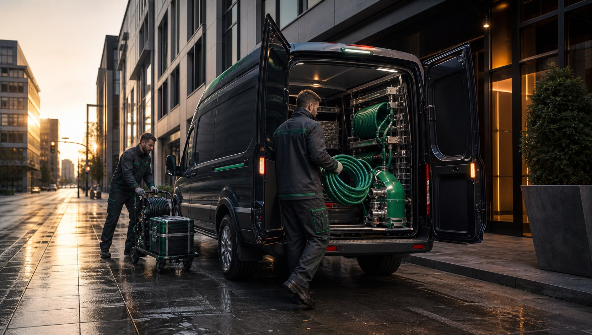

Emergenze, manutenzioni e impianti complessi
Spurghi a Reggio Emilia con un livello di servizio superiore.
Scarichi bloccati, fognature in pressione, fosse biologiche da svuotare o pozzetti pieni richiedono interventi rapidi, puliti e coordinati. Questo sito nasce per chi vuole un servizio tecnico, elegante e affidabile, senza improvvisazione.
Lavoriamo per abitazioni, condomini, locali, officine e aziende. Il focus locale resta chiaro, ma il linguaggio e' naturale: prima viene il problema del cliente, poi la soluzione corretta.

H24
urgenze
12
servizi
RE
provincia
Metodo premium
Non basta arrivare. Bisogna arrivare preparati.
Un intervento serio parte da poche domande utili: dove si trova il blocco, quali scarichi sono coinvolti, se ci sono odori, acqua che risale o pozzetti pieni.
Da qui si sceglie il mezzo, si valuta l'accesso e si lavora con attenzione agli spazi. Questo approccio rende il servizio piu' ordinato, veloce e comprensibile.
Servizi
Dodici interventi tecnici per scarichi, fosse e fognature.
Autospurgo
Autospurgo a Reggio Emilia
Quando pozzetti, fosse o reti private richiedono aspirazione e lavaggio, serve un mezzo adatto e una squadra abituata a lavorare con ordine.
Apri servizioFosse biologiche
Spurgo fosse biologiche a Reggio Emilia
La fossa biologica va gestita prima che diventi un'urgenza: odori, rallentamenti e rigurgiti sono segnali da non ignorare.
Apri servizioDisotturazione tubi
Disotturazione tubi a Reggio Emilia
Uno scarico lento puo' sembrare un fastidio minore, ma spesso anticipa un blocco piu' serio nella linea.
Apri servizioPronto intervento
Pronto intervento fognature a Reggio Emilia
Quando l'acqua risale o un pozzetto trabocca, la priorita' e' intervenire in modo rapido e ordinato.
Apri servizioPulizia pozzetti
Pulizia pozzetti a Reggio Emilia
Pozzetti e caditoie raccolgono sporco, sabbia, foglie e residui che nel tempo riducono il deflusso.
Apri servizioVideoispezione
Videoispezione tubazioni a Reggio Emilia
Se un problema ritorna spesso, guardare dentro la tubazione puo' evitare tentativi inutili.
Apri servizioLavaggio reti
Lavaggio reti fognarie a Reggio Emilia
Il lavaggio delle reti aiuta a rimuovere sedimenti e incrostazioni prima che diventino un blocco completo.
Apri servizioPozzi neri
Spurgo pozzi neri a Reggio Emilia
Un pozzo nero pieno o non correttamente gestito puo' creare odori, fuoriuscite e problemi igienici.
Apri servizioCondomini
Spurghi condominiali a Reggio Emilia
Nei condomini serve coordinamento: il problema di una colonna o di un pozzetto puo' coinvolgere piu' appartamenti.
Apri servizioRistoranti
Spurghi per ristoranti a Reggio Emilia
Cucine professionali, grassi e scarichi molto usati richiedono manutenzione piu' attenta rispetto a un'abitazione.
Apri servizioAziende
Spurghi industriali a Reggio Emilia
Capannoni, officine e aree produttive hanno impianti piu' complessi e scarichi spesso molto sollecitati.
Apri servizioEmergenze scarichi
Emergenze scarichi a Reggio Emilia
Uno scarico che si blocca all'improvviso puo' creare disagio immediato in casa, in negozio o in azienda.
Apri servizio
Tecnologia e controllo
Dove serve, si guarda dentro il problema.
Ostruzioni ricorrenti, scarichi rumorosi e cattivi odori possono nascondere depositi, radici, tratti rotti o pendenze non corrette. Per questo gli interventi migliori non sono mai casuali.
Citta' dove operiamo
Reggio Emilia e i principali comuni vicini.
Spurghi a Scandiano
Scandiano e le sue frazioni hanno molte abitazioni, cortili e attivita' dove scarichi e pozzetti richiedono interventi rapidi e puliti.
Spurghi a Correggio
A Correggio interveniamo su abitazioni, condomini, negozi e aree produttive con servizi di spurgo, lavaggio e disotturazione.
Spurghi a Carpi
Carpi e' un polo importante per case e imprese: gli interventi vengono organizzati valutando accessi, urgenza e tipo di impianto.
Spurghi a Rubiera
A Rubiera supportiamo privati, condomini e attivita' con interventi su scarichi, pozzetti, fosse e reti esterne.
Spurghi a Montecchio Emilia
Montecchio Emilia richiede un servizio flessibile, utile sia per manutenzioni programmate sia per emergenze improvvise.
Spurghi a Cavriago
A Cavriago interveniamo su impianti domestici e professionali, con particolare attenzione a scarichi lenti e pozzetti pieni.
Spurghi a Albinea
Ad Albinea lavoriamo su immobili residenziali, ville, cortili e reti private, mantenendo ordine e cura degli spazi.
Spurghi a Bagnolo in Piano
Bagnolo in Piano e le zone vicine possono contare su interventi per spurgo, autospurgo e fognature in emergenza.
Serve un intervento adesso?
Chiama per emergenze, manutenzioni o sopralluoghi. Il numero e' diretto e visibile senza prefisso internazionale.